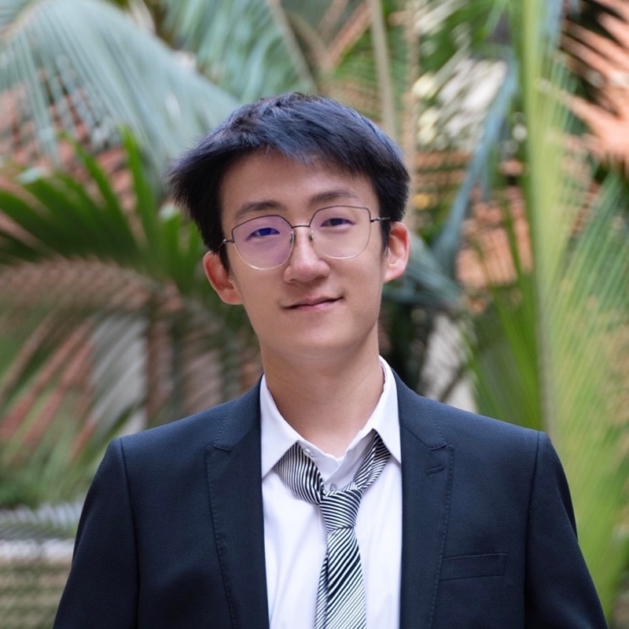

Yu (Bryan) Zhou
yuzhou@cs.ucla.eduI am a Computer Science Ph.D. student at UCLA, advised by Kai-Wei Chang and Nanyun Peng. I work on Multimodal (Vision + Language) and Embodied Learning.
At Meta, I contributed to grounding post-training for Muse Models 🥑 🍉. I also built training data pipelines for Segment Anything Models and created SAM 3 Agent.
Previously, I worked on embodied agents at Stanford SVL, with Manling Li, Jiajun Wu, and Fei-Fei Li.
My research is supported by the Amazon AI PhD Fellowship.

Selected Works
- OpenVLHarness: Real-World Visual Agentic Tool-Use with Multimodal Memory
Yu Zhou*, Cheng-Fu Yang*, Rui Sun*, Di Wu*, Sibo Peng, Mingyang Zhang, Zhen Yang, Ruiyi Zhang, Nanyun Peng, Zhe Gan, Kai-Wei Chang
Preprint.
- Muse Wonder and Muse Wonder Full: Frontier Models for Agents
Meta MSL Team
Technical Blog.
- Does Inference-Time Reasoning Really Improve Video Understanding?
Zhuohao Yu, Yu Zhou, Zhecan Wang, Rui Sun, Kai-Wei Chang, Nanyun Peng
NeurIPS 2026.
- SAM 3: Segment Anything with Concepts
Meta SAM3 Team
ICLR 2026.
- ENACT: Evaluating Embodied Cognition with World Modeling of Egocentric Interaction
Qineng Wang*, Wenlong Huang*, Yu Zhou, Hang Yin, Tianwei Bao, Jianwen Lyu, Weiyu Liu, Ruohan Zhang, Jiajun Wu, Li Fei-Fei, Manling Li
Outstanding Paper Awards at ICLR 2026 World Models Workshop and Lifelong Agents Workshop
ICLR 2026.
- Contrastive Visual Data Augmentation
Yu Zhou*, Bingxuan Li*, Mohan Tang*, Xiaomeng Jin, Te-Lin Wu, Kuan-Hao Huang, Heng Ji, Kai-Wei Chang, Nanyun Peng
ICML 2025.
- Embodied Agent Interface: Benchmarking LLMs for Embodied Decision Making
Manling Li*, Shiyu Zhao*, Qineng Wang*, Kangrui Wang*, Yu Zhou* (equal contribution), Sanjana Srivastava, Cem Gokmen, Tony Lee, Li Erran Li, Ruohan Zhang, Weiyu Liu, Percy Liang, Li Fei-Fei, Jiayuan Mao, Jiajun Wu
Best Paper Award at SoCal NLP Symposium 2024
NeurIPS 2024. Oral (Top 0.4%)
- Localizing Active Objects from Egocentric Vision with Symbolic World Knowledge
Te-Lin Wu*, Yu Zhou* (equal contribution), Nanyun Peng
EMNLP 2023. Oral Presentation
- Non-Sequential Graph Script Induction via Multimedia Grounding
Yu Zhou, Sha Li, Manling Li, Xudong Lin, Shih-Fu Chang, Mohit Bansal, Heng Ji
ACL 2023.


Services
- Challenge Organizer: Embodied Agent Interface Challenge @ NeurIPS 2025
- Workshop Organizer: Foundation Models Meet Embodied Agents @ CVPR 2025
- Reviewer: JMLR, NeurIPS, ICLR, ICML, CVPR, ECCV, COLM, AAAI, ACL, EMNLP
- Teaching: CS146 Machine Learning, CS263 Natural Language Processing
Talks
- Amazon Science Hub, California NanoSystems Institute. (10/15/26)
- Nuclear Physics Group, UCLA. (01/27/26)
- Information Sciences Institute, USC. (11/18/25)
- Salesforce AI Research Future Forum. (08/14/25)